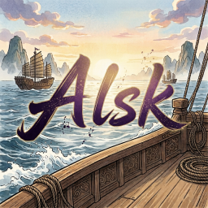

Hello, 欢迎访问我的主页
普通 35+ 程序员一枚, 只懂 C/C++, JS/TS, PHP, Bash/Bat
软件综合素养略高一点
- 软件设计 (精巧易用)
- 软件架构 (简单稳定)
- Native + Web
- Windows + Linux
比较适合做应用, 普通用户有需要的话可以私信我 💐💐💐 合作互利

Alsk Home普通 35+ 程序员一枚, 只懂 C/C++, JS/TS, PHP, Bash/Bat
软件综合素养略高一点
比较适合做应用, 普通用户有需要的话可以私信我 💐💐💐 合作互利